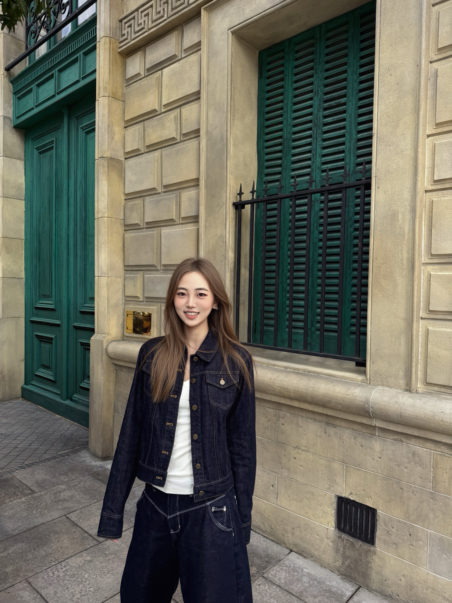

Babson College
Class of 2028, majoring in Business Analytics. Balancing coursework with varsity athletics and campus life.
welcome to my little corner of the internet ✿
Beijing-born, Babson-bound — Class of 2028, varsity golfer, and Business Analytics major in progress. When I'm not on the course, I'm probably traveling, baking, or lost in a playlist.

that's me ☁
From the Florida sunshine to the Babson campus.
Class of 2028, majoring in Business Analytics. Balancing coursework with varsity athletics and campus life.
Finished growing up and graduated high school in Orlando, where sunshine and golf courses shaped a lot of my teenage years.
Born and raised in Beijing until 6th grade, when I moved to the U.S. to continue my schooling.
Competing for Babson College as part of the varsity golf team.
Training, competing, and growing as a student-athlete while pursuing my degree.
A few things that keep me inspired and recharged.
Exploring new cities, cultures, and cuisines whenever I get the chance.
Experimenting in the kitchen, from cookies to layered cakes.
Always have a playlist running, whether studying, baking, or on the road.